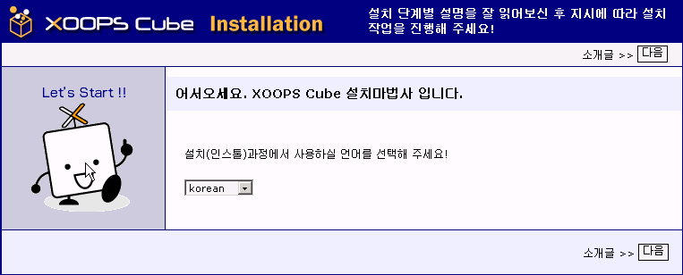
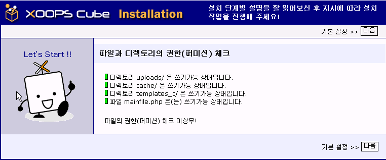
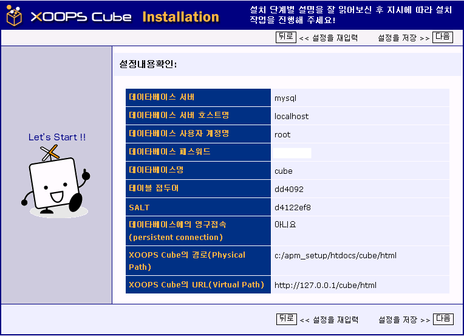
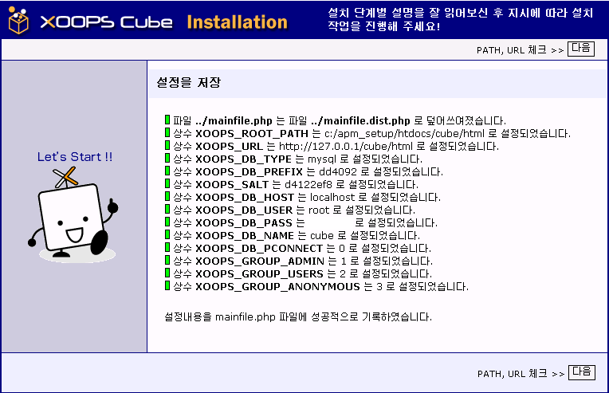
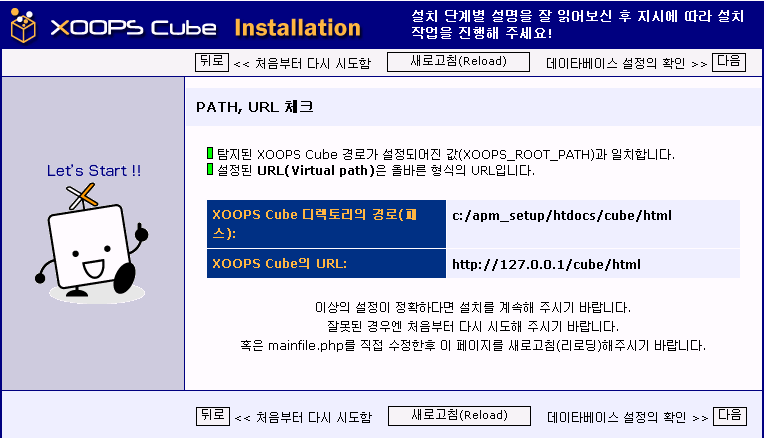
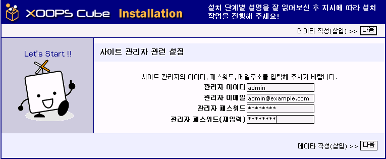
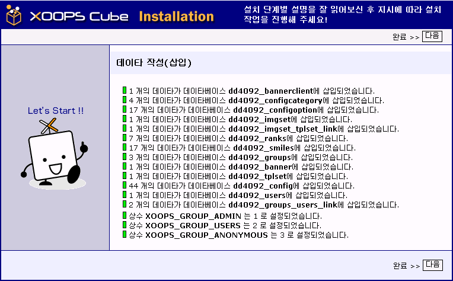
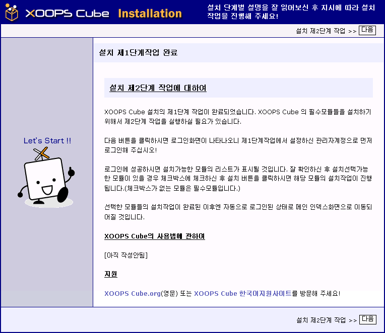
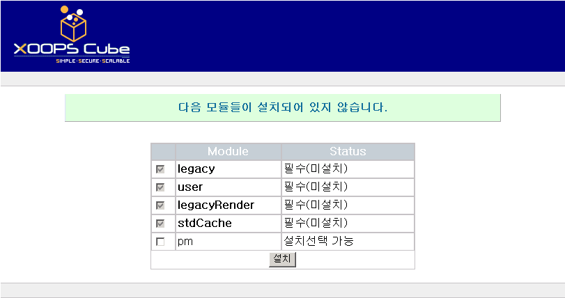

XOOPS Cube Legacy 설치 방법
알아두어야 할 기본 지식
XOOPS Cube Legacy 는 객체지향(Object Oriented)적 디자인의 PHP 오픈소스 프로그램입니다. 현재 다양한 운영환경을 지원하고 있으며..향후 지원폭을 계속 늘려갈 것입니다. 짧은 시간내에 간단히..그러나 정말로 멋진 커뮤니티사이트, 인트라넷용 포탈사이트, 기업 포탈사이트, 웹 블로그 등을 작성하시길 원하신다면 최적의 선택이 될 것입니다.
XOOPS Cube Legacy의 라이센스는 GNU General Public License (GPL Ver.2)입니다.
단, 포함되어져 있는 XOOPS Cube 코어파일들의 라이센스는 BSD license입니다.
( 라이센스관련 자세한 사항은 패키지에 포함되어져있는 COPYING.txt 파일을 참조하시기 바랍니다. )
XOOPS Cube Legacy를 설치하시기 전에 웹사이트구축과 관련된 기본적 지식을 책이나 관련 사이트 등을 참고하여 미리 어느 정도 학습해 두실 것을 권합니다.
요구사양설치전 준비사항
- 웹서버, PHP, 데이타베이스서버를 올바르게 설치한다.
- XOOPS Cube Legacy용의 데이타베이스를 하나 준비한다.
( 데이타베이스 작성권한이 없으실 경우는 서버관리자에게 문의/요청하시기 바랍니다. ) - 준비한 데이타베이스에 접근가능한 데이타베이스서버 사용자계정을 준비한다.
- XOOPS Cube Legacy 파일들을 서버에 업로드한 후, uploads/, cache/, templates_c/ 디렉토리와 mainfile.php 파일을 쓰기가능상태로 설정한다.
- 웹브라우저를 cookie 가능, JavaScript 가능으로 설정한다.
설치법 간단요약
##XOOPS Cube 한국어버전 설치법(1) - 한국어언어팩을 이용한 설치
(1)XOOPS Cube코어를 다운받는다.
xoopcube.org 에서 최신버전을 다운받습니다.
http://www.xoopscube.org
(2)저희 사이트의 다운로드코너나 혹은.. dev.xoops.org 의 한국어버전 프로젝트 페이지에서 한국어 언어팩을 다운받습니다.
(EUC-KR 과 UTF-8(유니코드) 버전중..선택)
프로젝트페이지:
http://dev.xoops.org/modules/xfmod/project/?group_id=1189
(3)언어팩을 압축해제하여..내용물을.. (1)에서 다운받은..코어파일들에..추가합니다.
(이미지파일의 경우엔..덮어쓰기)
(4)파일을 서버에 업로드하셔야 겠죠!
(위의 설치전 준비사항 참고하세요!)
(5)이제.. 설치를 시작합니다.
설치는 설치마법사를 통해..간단히..되므로..설치마법사를....그냥..따라가시면..됩니다.
--설치시 사용할 언어는..
EUC-KR의 경우.. korean 을
UTF-8 의 경우... koreanutf 를 선택하세요.
--XOOPS Cube루트 혹은... XOOPS Cube루트/install/index.php 를 브라우저로 액세스하시면.. 설치마법사가 시작됩니다.
예1) http://127.0.0.1/html/index.php (테스트용 로컬서버의 경우)
예2) http://www.xoops.ne.kr/xoopscube/index.php
(물론 실전에선 본인의 URL을 입력하셔야겠죠! )
##XOOPS Cube 한국어버전 설치법(2) - XOOPS Cube Korean 풀 패키지를 이용한 설치
(1)저희 XOOPS Cube 한국어 지원 사이트에서 XOOPS Cube Korean 풀 패키지를 다운받습니다.
(EUC-KR 과 UTF-8(유니코드) 버전중..선택)
(2)압축해제후 파일을 서버에 업로드하셔야 겠죠!
(위의 설치전 준비사항 참고하세요!)
(4)이제.. 설치를 시작합니다.
설치는 설치마법사를 통해..간단히..되므로..설치마법사를....그냥..따라가시면..됩니다.
--설치시 사용할 언어는..
EUC-KR의 경우.. korean 을
UTF-8 의 경우... koreanutf 를 선택하세요.
--XOOPS Cube루트 혹은... XOOPS Cube루트/install/index.php 를 브라우저로 액세스하시면.. 설치마법사가 시작됩니다.
예1) http://127.0.0.1/html/index.php (테스트용 로컬서버의 경우)
예2) http://www.xoops.ne.kr/xoopscube/index.php
(물론 실전에선 본인의 URL을 입력하셔야겠죠! )
설치 단계별 상세 설명
XOOPS Cube루트 혹은... XOOPS Cube루트/install/index.php 를 브라우저로 액세스하시면..
아래 화면과 같이 설치마법사가 시작됩니다.
음..
먼저 설치할 언어를 선택하셔야 겠죠!
EUC-KR의 경우.. korean 을
UTF-8 의 경우... koreanutf 를 선택하신후 Next 버튼을 클릭하시면 됩니다.

위의 알아두어야할 기본 지식 항목에서도 언급한
XOOPS Cube에 대한 간단한 소개글, 요구사항, 설치전 준비사항등이 표시되니..
다시 한번 주의깊게 읽어보신 후
다음 버튼을 클릭해 다음 화면으로 이동하시기 바랍니다.

설치전 준비사항 항목에서 언급한
파일/디렉토리에 대한 퍼미션 설정이 올바른지 체크합니다.
녹색 아이콘이 표시될 경우엔 정상설정을 의미하고...
빨간색 아이콘이 표시될 경우엔 설정이 잘못되었음을 의미하니..다시 확인후 재설정하시면 됩니다.
모두 정상적으로 설정된 경우(모두 녹색아이콘이 표시된 경우)엔..
다음 버튼을 클릭해 다음 화면으로 이동하시면 되겠죠!

다음은
데이타베이스, PATH, URL 을 설정하셔야 합니다.
설명글을..참고하여 설정해 주시면 됩니다.
( 보안을 위해 테이블 접두어는 xoops 이외의 값을 사용하시길 권합니다.)
용어의 의미가 잘 이해되지 않는 초보분들은
서버관리자등에게 관련사항을 문의하신 후 설정하시면 되겠죠!

이전화면에서 입력한 데이타베이스, PATH, URL 관련 설정값들이..
정상적으로 입력되었는지 다시 한번 확인하는 화면입니다.
다시 한번 주의깊게 확인하신 후
정상적으로 입력된 경우엔 다음 버튼을 이용해 다음 화면으로..
잘못입력된 경우엔 뒤로 버튼을 클릭해 이전화면으로..
이동하시면 되겠죠!

이전화면에서 입력한 데이타베이스, PATH, URL 관련 설정값들이..
mainfile.php 에 기록처리됩니다.
모두 정상적으로 기록된 경우...
(녹색아이콘:기록성공, 빨간아이콘:기록실패 을 의미)
다음 버튼을 클릭해 다음 화면으로 이동하시면 되겠죠!

mainfile.php 에 기록처리된
XOOPS Cube 디렉토리의 경로, XOOPS Cube의 URL 설정값이
설치마법사가 검출한 값과 일치하는지를 확인합니다.
( 녹색 아이콘: 일치함을 의미)
( 붉은색 아이콘: 불일치를 의미)
정상적으로 일치하는 경우엔 다음 버튼을 클릭하여 다음화면으로 이동하시면 되겠죠!
그렇지 않은 경우엔 뒤로 버튼을 클릭해 다시 확인후 설정해 주시면 됩니다.
( 특수 설정환경하에서 올바르게 설정하였음에도 불구하고
붉은색 아이콘(불일치)이 표시되는 경우가 발생할 가능성이 있습니다.
그럴 경우엔 무시하시고 다음 버튼을 클릭해 다음화면으로 이동하시며 됩니다. )

이전설정화면에서 입력한
데이타베이스 관련 설정값들을
다시 한번 확인하는 화면입니다.
주의깊게 다시 한번 확인하신후
올바르게 입력/설정 되었다면
다음 버튼을 클릭해 다음화면으로 이동하시면 됩니다.

이전 설정화면에서 입력한
데이타베이스관련 설정값을 이용해
설치마법사가
데이타베이스 서버에서 접속테스트 및 사용할 데이타베이스의 존재확인 테스트를
실시합니다.
(에러가 발생한 경우엔 붉은색 아이콘이 표시되니 올바른 설정값으로 다시 설치하셔야 합니다.)


XOOPS Cube 에서 사용할 데이타베이스 테이블이 작성처리되어
그 작업결과가 표시됩니다.
(작성에 성공한 경우엔 녹색 아이콘, 실패한 경우엔 붉은색 아이콘이 표시됩니다.)
모두 정상적으로 작성되었다면 다음 버튼을 클릭해 다음 화면으로 이동하시면 됩니다.

사이트관리자용의 계정을 작성하는 화면입니다.
(암호는 되도록 남들이 추측하기 힘든 값으로 설정하시는게 좋겠죠!)
설치완료후 이 관리자계정으로 로그인하셔서 사이트관리를 하셔야 하니..
반드시 잊지말고 기억하셔야만 합니다.

XOOPS Cube 에서 사용할 초기 기본설정값등이 기록/작성되어져..
그 작업결과가 표시됩니다.
모두 정상적으로 기록되어 녹색아이콘이 표시되어 졌다면
다음 버튼을 클릭해 다음화면으로 이동하시면 되겠죠!

설치 제 1단계 작업 완료!!




이것저것 길게 설명하였습니다만...
설정값들만 제대한 입력하시면
설치완료까지...실제적으로 몇분 밖에 걸리지 않습니다.
(음...공개서버에 설치하시기 전에..
먼저 테스트서버에서 설치테스트를..한번 해 보실 것을 권합니다.)
그럼^^
XOOPS Cube 의 세계에 풍덩 빠져보시기 바랍니다.
#####
상세한 정보가 필요하신 분들은
XOOPS Cube FAQ 혹은
XOOPS Cube 한국어 지원 사이트의 관련 포럼을
참조해 주시기 바랍니다.
XOOPS Cube Project
XOOPS Cube FAQ
XOOPS Cube 한국어 지원 사이트